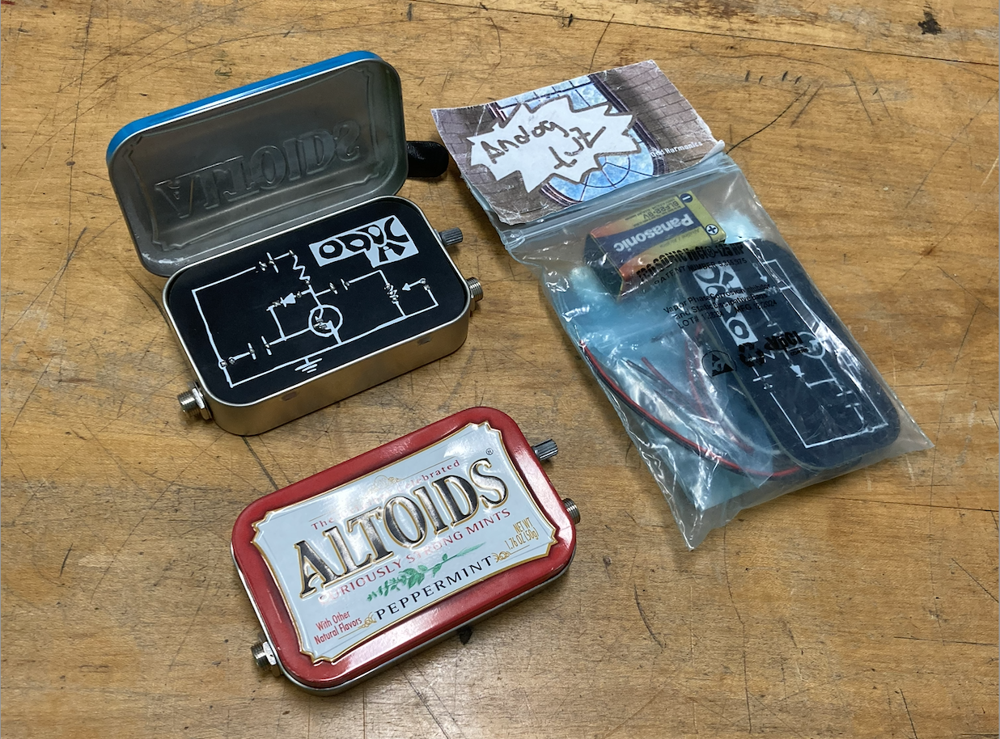

This is a continuation of the Distortion Pedal project (found here)
The next interation had a visual schematic change (because the orginal was kinda ugly)
I also took out the star cut out because it didnt work. The idea was to use a LED as a diode and have it light up when playing, which would then shine through the board as a lit up star. This didnt work which isnt surpising at all because there is not enough current to drive an led with how the circuit is set up. Cool idea though.
Heres what the final second interation looks like:

This interation had no room for the battery within the tin, the solder joints from the components where poking into the battery which can be a pick safety issue.
Heres what that looks like: **get from mark ?
The next and current interation made room for the battery (which is under the analog fuzz logo), this is where this project got the analog fuzz name because i thought it sounded cool. I also had feedback that the ODD AC logo thing was really hard to read so i changed it to analog fuzz. After some guitar player feedback I added some labels for the in and out because I found out that the standard is the other way in most guitar pedals.
These where just cosmetic changes to the circuit board. I started this process by drawing out the design on paper, and physicaly having the components and battery to make sure everything would fit. I put this into photoshop and then adding that image into kicad on the front silk screen layer
image of drawing it out paper (have it on banana phone?)
I also made a small foot print error on the transistor in the second interation that I fixed.
Heres what the final looks like, with different circuit board colors and the prototype packaging.

some things I want to fix for the next interation is, affortable and accessable bipass switch, i havent added one becasue its expenseive and I cant use a foot switch so im not sure how else to implement it wehre it would be easy to switch with the foot. also some people i talked to liked that it was super simple and that it made it unquie. but when i was jamming with it, the guitar player was trying to play some jack white seven nation armry and not being able to switch it on while player for the solo was anyoying so im going to try and add an affortable bipass. also the i didnt think much about the packaging, i just wanted to put something together. I like the idea of using the digikey packages, as they are the best size and there are so many of them at where i work that just get thrown out so its good for recyling and what not. the cover though I want to work on i just made it real quick in photoshop